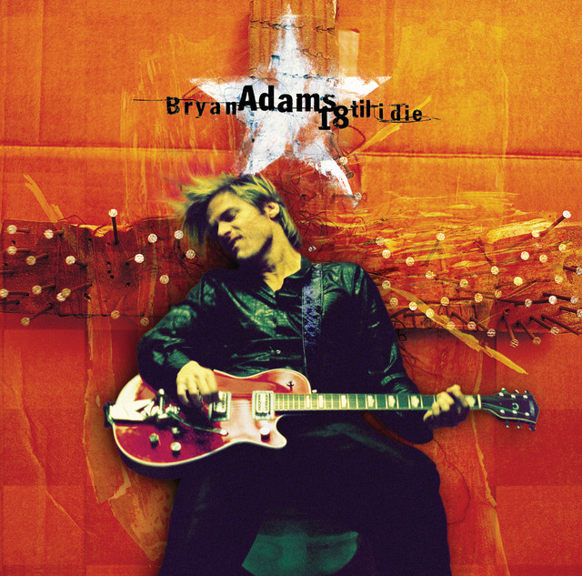
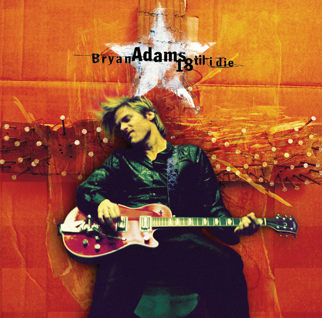

Historia

Bryan Adams es un musico y cantante canadiense que alcanzo el éxito en la decada de 1980 y 1990 con canciones como "Summer of '69" y "(Everything I Do) I Do It for You".
Con mas de 100 millones de discos vendidos, es uno de los artistas mas exitosos de la historia de la musica.
Discografia
· Reckless (1984)
· Cuts Like a Knife (1983)
· Waking Up the Neighbours (1991)
· 18 til I Die (1996)
 

Integrantes
· Bryan Adams: voz principal, guitarra acústica y guitarra eléctrica.
· Keith Scott: guitarra principal y guitarra rítmica.
· Mickey Curry: bateria y percusion
· Dave Taylor: bajo.